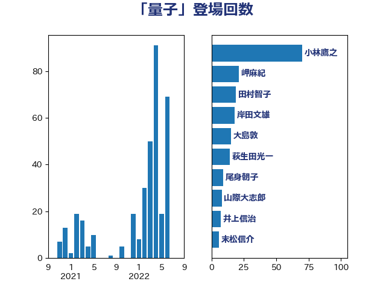

単語「量子」

| 小林鷹之 | 自由民主党 | 70 回 |
| 岬麻紀 | 日本維新の会 | 21 回 |
| 田村智子 | 日本共産党 | 19 回 |
| 岸田文雄 | 自由民主党 | 18 回 |
| 大島敦 | 立憲民主党 | 15 回 |
| 萩生田光一 | 自由民主党 | 14 回 |
| 尾身朝子 | 自由民主党 | 9 回 |
| 山際大志郎 | 自由民主党 | 8 回 |
| 井上信治 | 自由民主党 | 7 回 |
| 末松信介 | 自由民主党 | 6 回 |
| 武田良太 | 自由民主党 | 5 回 |
| 空本誠喜 | 日本維新の会 | 5 回 |
| 輿水恵一 | 公明党 | 5 回 |
| 中村裕之 | 自由民主党 | 4 回 |
| 東徹 | 日本維新の会 | 4 回 |
| 佐藤正久 | 自由民主党 | 3 回 |
| ながえ孝子 | 無所属 | 2 回 |
| 丹羽秀樹 | 自由民主党 | 2 回 |
| 伊藤孝恵 | 国民民主党 | 2 回 |
| 堀井巌 | 自由民主党 | 2 回 |
| 小倉將信 | 自由民主党 | 2 回 |
| 池田佳隆 | 自由民主党 | 2 回 |
| 熊田裕通 | 自由民主党 | 2 回 |
| 藤田文武 | 日本維新の会 | 2 回 |
| 金子恭之 | 自由民主党 | 2 回 |
| 鈴木俊一 | 自由民主党 | 2 回 |
| 三ッ林裕巳 | 自由民主党 | 1 回 |
| 三浦信祐 | 公明党 | 1 回 |
| 上杉謙太郎 | 自由民主党 | 1 回 |
| 中西祐介 | 自由民主党 | 1 回 |
| 今枝宗一郎 | 自由民主党 | 1 回 |
| 吉田統彦 | 立憲民主党 | 1 回 |
| 塩川鉄也 | 日本共産党 | 1 回 |
| 大家敏志 | 自由民主党 | 1 回 |
| 大野敬太郎 | 自由民主党 | 1 回 |
| 宮口治子 | 立憲民主党 | 1 回 |
| 小寺裕雄 | 自由民主党 | 1 回 |
| 小沼巧 | 立憲民主党 | 1 回 |
| 山岸一生 | 立憲民主党 | 1 回 |
| 山田太郎 | 自由民主党 | 1 回 |
| 山谷えり子 | 自由民主党 | 1 回 |
| 島尻安伊子 | 自由民主党 | 1 回 |
| 有村治子 | 自由民主党 | 1 回 |
| 末松義規 | 立憲民主党 | 1 回 |
| 本庄知史 | 立憲民主党 | 1 回 |
| 杉田水脈 | 自由民主党 | 1 回 |
| 松山政司 | 自由民主党 | 1 回 |
| 松川るい | 自由民主党 | 1 回 |
| 松野博一 | 自由民主党 | 1 回 |
| 林芳正 | 自由民主党 | 1 回 |
| 森山浩行 | 立憲民主党 | 1 回 |
| 榛葉賀津也 | 国民民主党 | 1 回 |
| 橘慶一郎 | 自由民主党 | 1 回 |
| 浅田均 | 日本維新の会 | 1 回 |
| 浅野哲 | 国民民主党 | 1 回 |
| 田畑裕明 | 自由民主党 | 1 回 |
| 畦元将吾 | 自由民主党 | 1 回 |
| 石川昭政 | 自由民主党 | 1 回 |
| 稲津久 | 公明党 | 1 回 |
| 篠原豪 | 立憲民主党 | 1 回 |
| 茂木敏充 | 自由民主党 | 1 回 |
| 西銘恒三郎 | 自由民主党 | 1 回 |
| 金村龍那 | 日本維新の会 | 1 回 |
| 阿部司 | 日本維新の会 | 1 回 |
| 青山繁晴 | 自由民主党 | 1 回 |
| 青木愛 | 立憲民主党 | 1 回 |
| 高木かおり | 日本維新の会 | 1 回 |
| 黄川田仁志 | 自由民主党 | 1 回 |